Deploy Memory on Railway¶
This tutorial walks through a complete Memory installation on Railway using the installer at deploy.memory.emergent-company.ai. The screenshots below come from a real installation; the temporary password is masked, and the admin address shown is a placeholder.
Before you start¶
- A Railway account with permission to create projects in the selected workspace.
- Railway capacity for the five services and one bucket the template creates.
- A browser signed in to the Railway account you want to use.
No AI key needed yet
The installer does not ask for an AI provider key. AI providers are configured per project in Memory after installation.
1. Choose Railway¶
Open the Memory installer and choose Railway. Docker, Google Cloud and AWS are offered on the same page as a downloadable bundle, which this tutorial does not cover.
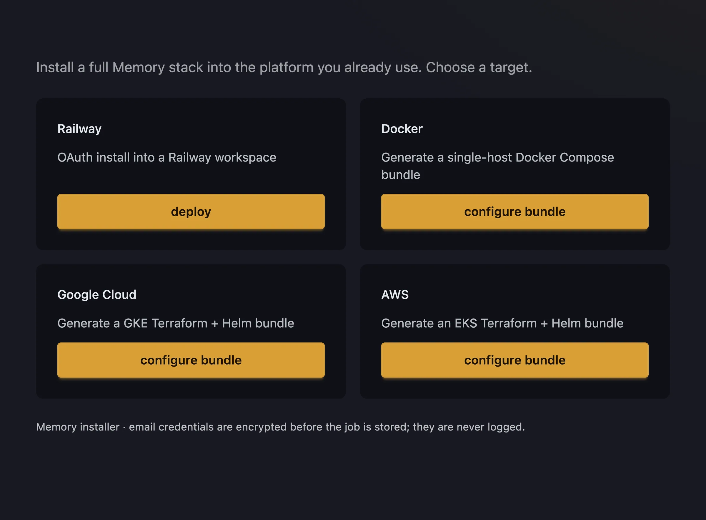
2. Authorize the installer¶
Click deploy. Railway asks you to authorize the Memory installer. The
installer needs workspace:admin so it can create and configure the project,
services and bucket. Review the permissions and click Authorize.
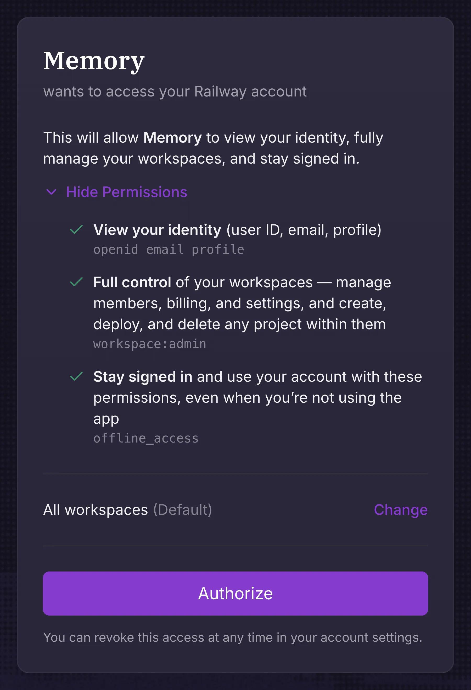
You can revoke this access later in Railway account settings. The portal stores the OAuth session in a sealed cookie; it does not store your Railway password.
3. Choose a workspace and admin email¶
After authorization the installer shows the Railway account and workspace. Select the workspace that should own the deployment. The Admin email becomes the first platform superadmin. It defaults to the signed-in Railway email and can be changed; the screenshot shows a placeholder address.
Email is skipped by default for the Railway runner. Leave Skip email for now checked to finish the install; configure SMTP later from Settings → Platform email. Until email is configured, Zitadel verification, password reset and 2FA, and Memory invite emails are unavailable.
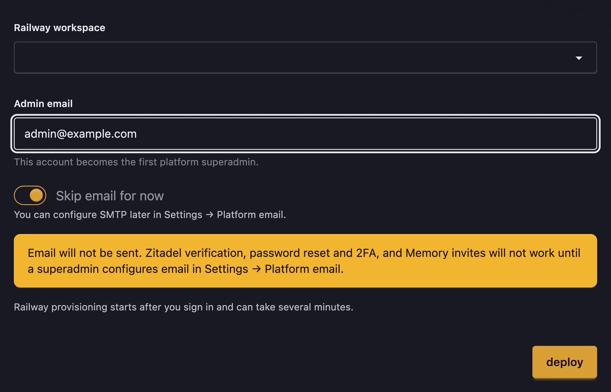
Click deploy.
4. Watch the install¶
The installer creates a Railway project, deploys the published Memory template, and bootstraps Zitadel. You can leave this page open; progress is persisted and the page polls for status.
First the Railway project is created:
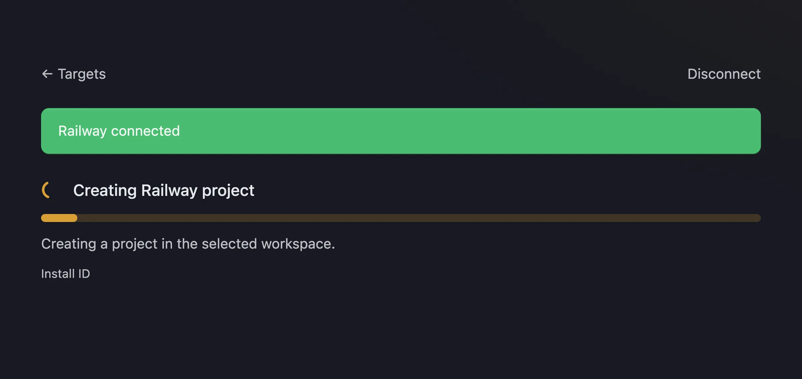
The template then creates Postgres/pgvector, xberg, Zitadel, memory-server,
memory-web-ui, and the memory-documents bucket. Domains are assigned and
Zitadel is bootstrapped automatically:
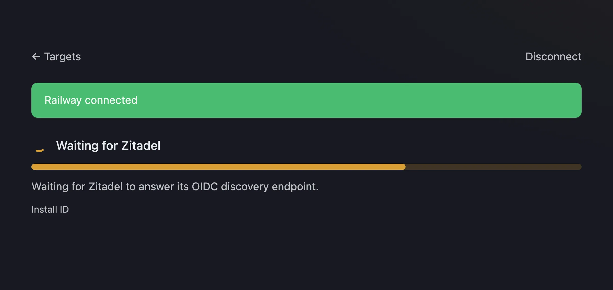
The runner writes the OIDC and admin credentials into both Memory services and restarts them:
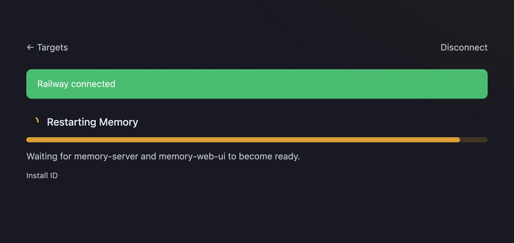
5. Copy the temporary password¶
When the job completes, the page shows a structured success panel with the Memory URL, the first admin email, and a masked temporary password. Use Show to reveal it and Copy to copy it. The password stays available to the account that created the install so it can be retrieved after the page is reloaded.
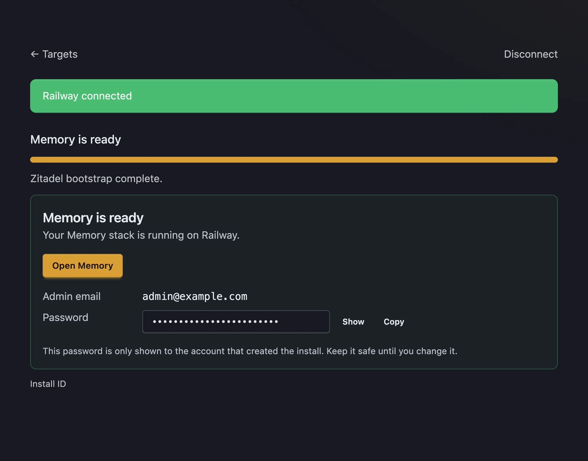
The temporary password is a live credential
It stays valid until you change it. Do not put it in a ticket, chat or commit.
6. Sign in to Memory¶
Click Open Memory on the success card. The app opens in a new tab; click Sign in to start the Zitadel flow.
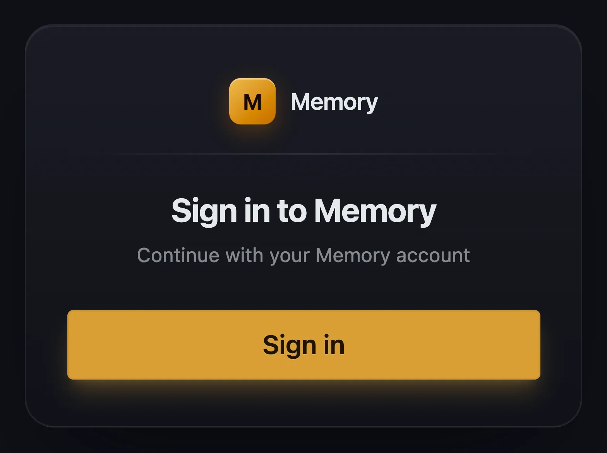
7. Sign in with the first admin account¶
Enter the admin email from step 3.
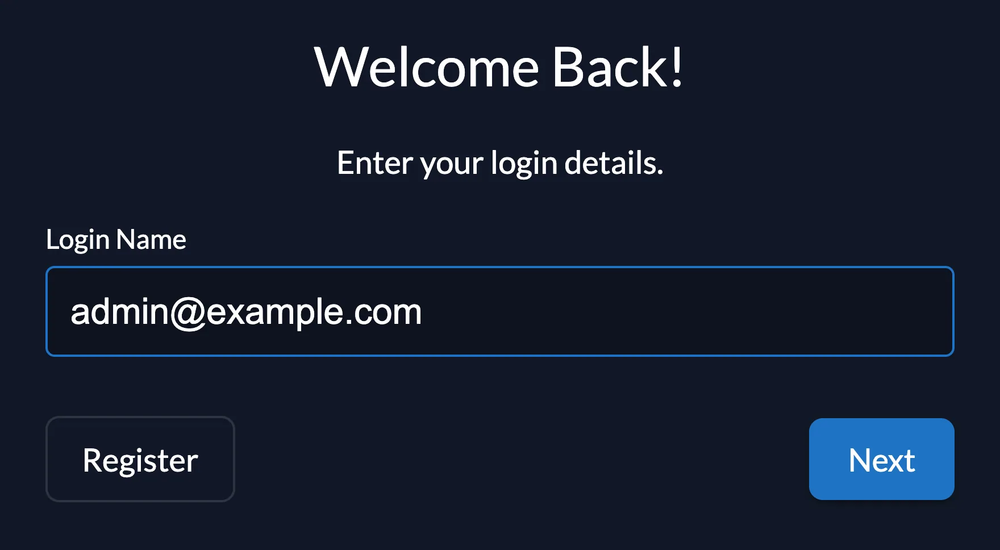
Enter the temporary password from step 5.
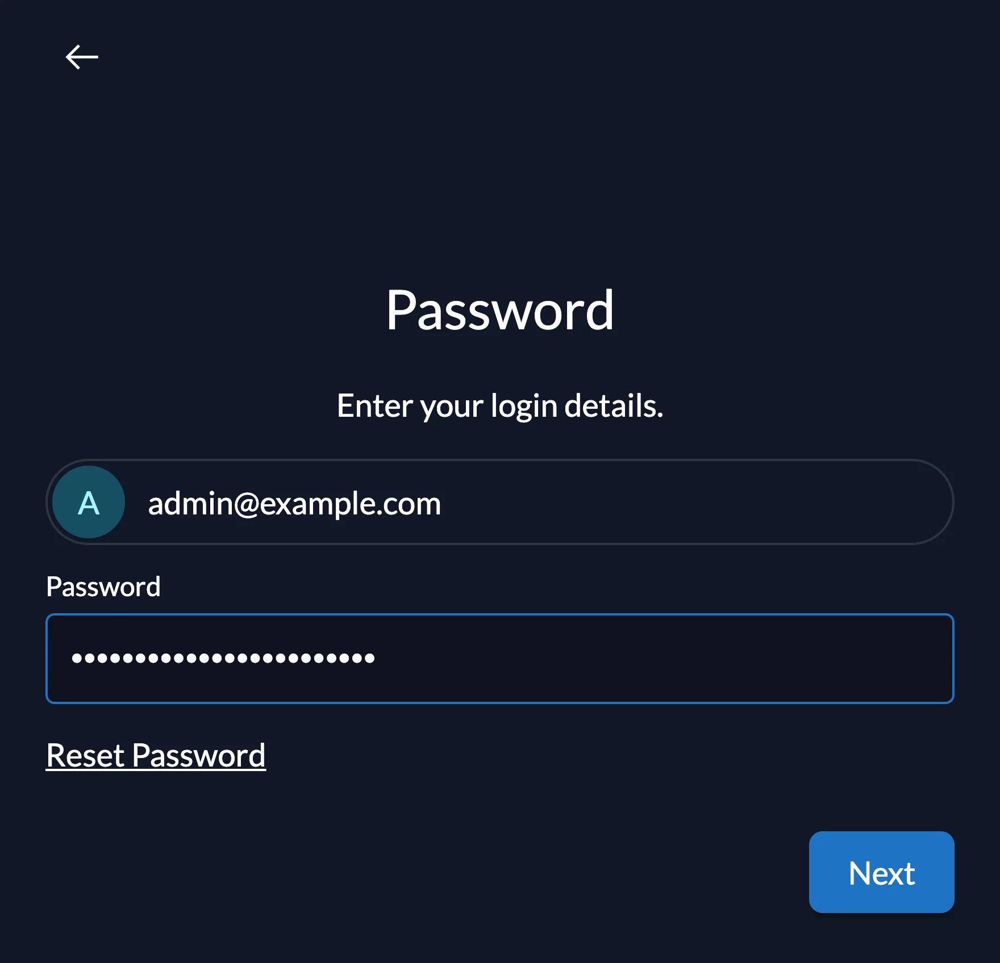
Zitadel offers to enroll a second factor at this point, before the password change. Click Skip at the bottom left for this first login — you can add an authenticator app or a device factor later, and you should before handing the account to a team.
The first admin is imported with passwordChangeRequired, so Zitadel requires a
new password before the app opens. Enter the temporary password as the old one,
choose a new password and repeat it in Password confirmation: the checklist
under the fields turns green as each rule is met, and Next stays disabled
until they all are.
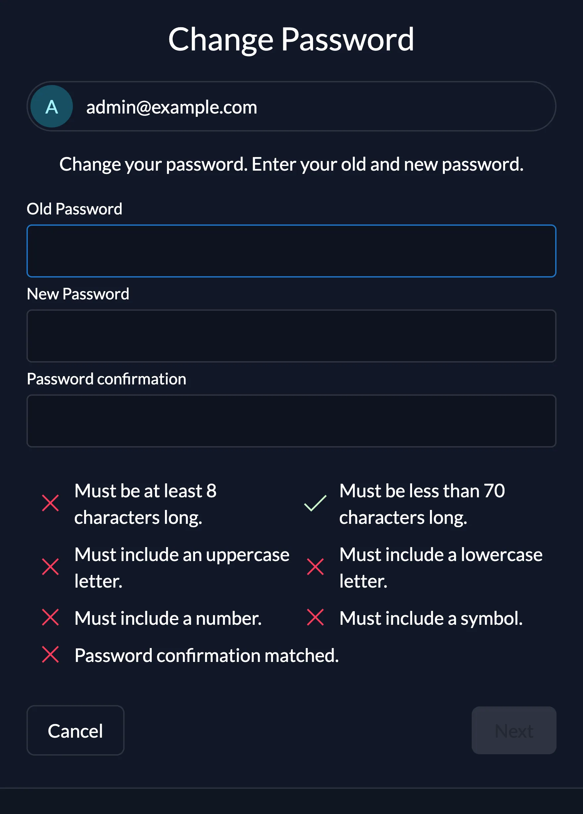
Zitadel then confirms with "Your password was changed successfully." — click Next there, and Zitadel returns to Memory.
8. Verify the installation¶
You should land on the organization's Projects page, with a Memory project created automatically. The footer shows the deployed product version.
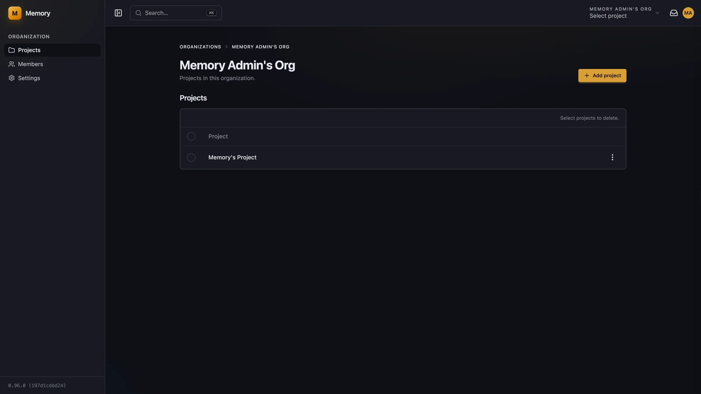
At this point the full stack is running:
memory-server— API and MCPmemory-web-ui— browser UI- Zitadel — authentication
- Postgres with pgvector — data
- xberg — document processing
- Railway bucket — document storage
After installation¶
- Configure email — Settings → Platform email, if you skipped it. This enables verification, password reset, 2FA and invites.
- Configure AI — open the project and configure a provider/model in Memory. Embeddings must use 768 dimensions.
- Keep the project — Railway owns the services and bucket. Deleting the Railway project deletes the deployment; Memory data lives in that project's Postgres and bucket.
- Do not reuse the temporary password — the first-login password change is required and completes the bootstrap.
Troubleshooting¶
| Symptom | What to do |
|---|---|
| Status is blocked — Awaiting Zitadel admin token | Zitadel setup logs did not expose the first-instance PAT within the bounded wait. Create a new install; do not reuse the partially bootstrapped project for a production deployment. |
| Railway reports project creation rate limit | The workspace allows one project per 30 seconds. Wait and retry. |
| Railway reports Free plan resource provision limit | Upgrade the workspace plan or remove unused projects, then retry. |
| Installer reports bucket credentials failed | The template bucket is still provisioning. Wait and retry; the runner retries transient Railway bucket states. |
| Browser shows a Zitadel login in another language | Zitadel follows the browser language. The flow is the same; use the field labels and the admin email. |
| Login says the user cannot be found | Use the full admin email shown on the success screen; the first-instance root account is separate. |
| Need to retry after a transient failure | Create a new install. A failed install is not resumed, and the one-time bootstrap token is not stored. |
Under the hood¶
- Installer: https://deploy.memory.emergent-company.ai
- Railway template: https://railway.com/deploy/memory
- Template ID:
110bffeb-0199-4671-be7e-e86fdef9dc82 - The runner reads Zitadel's first-instance PAT from setup stdout (the template
sets
ZITADEL_FIRSTINSTANCE_PATPATHempty), validates it, creates the OIDC applications and admin PAT, imports the first human admin, grantsmemory-superadmin, writes the service env, and redeploys both Memory services before reporting success.